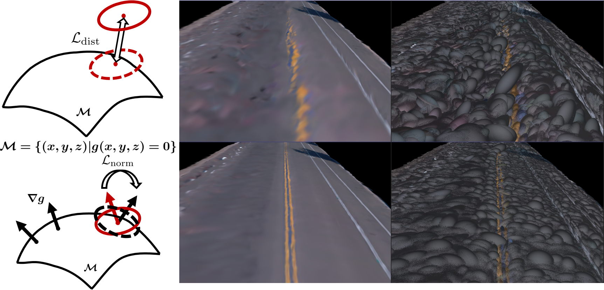

Pre-trained Surface Based On SDF
The left part shows the constraints guided by SDF. The top row (right part) displays rendered image images and ellipsoids without SDF regularizer, and the bottom row (right part) showcases results obtained with SDF regularizer. It can be observed that the inclusion of SDF regularization leads the road model to render higher-quality images with the help of better road geometry.